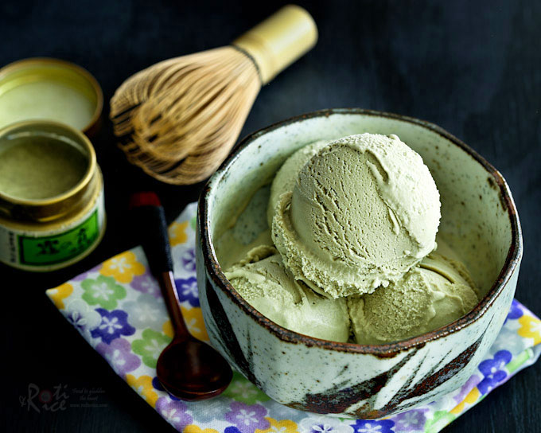

Matcha(a.k.a. Green Tea) Soft Serve Ice Cream

Green Tea Ice Cream Recipe
by Candice Walker at Proportional Plate
Ingredients
 ▢ 5 large egg yolks
▢ 5 large egg yolks
▢ 1/2 cup sugar
▢ 1 1/2 cups whole milk
▢ 1 vanilla bean or 1 teaspoon vanilla extract
▢ 2 tbsp culinary matcha
▢ 1 1/2 cups heavy cream
Instructions
- Put the bowl of your ice cream maker in the freezer.
- Whisk the yolks and sugar together until pale yellow.
- Warm the milk and vanilla until it just lightly simmers.
- Temper the egg/sugar mixture with the milk/vanilla mixture.
- Return to the sauce pan and cook until thickened, stirring slowly and constantly. It should get to 170F.
- Remove from heat. Sift and whisk or blend the matcha into the mixture. Add the cream. Chill in the refrigerator overnight.
- The next day, add your chilled ice cream to the ice cream maker. Churn (stir setting) until it is the thickness of soft serve ice cream, 18-22 minutes.
- Transfer to a container you can freeze, cover with parchment paper (optional), and freeze at least 4 hours.
Notes from Candice
"Want more matcha flavor? Add an extra teaspoon of matcha. Want it more vanilla-y? Leave one out.
Cover the ice cream with parchment paper for a longer lasting smooth, soft texture.
Make sure you store your matcha in a well-sealed container. It needs to be air tight to keep out moisture.
How to keep it fresh: store your sealed matcha in the refrigerator for long lasting freshness.
Use culinary grade matcha...no need to waste that extra money on the ceremonial grade matcha for this recipe. FYI You should only be using that top shelf matcha with water...not even lattes."
Nutrition
Calories: 273kcal | Carbohydrates: 16g | Protein: 5g | Fat: 20g | Saturated Fat: 11g | Cholesterol: 163mg | Sodium: 41mg | Potassium: 103mg | Sugar: 14g | Vitamin A: 1045IU | Vitamin C: 0.2mg | Calcium: 94mg | Iron: 1mg